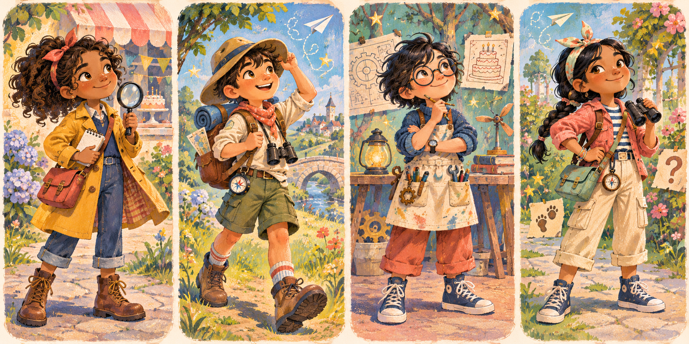

Big imagination. Clear parent control.
PrinTale helps families build a playful illustrated storybook preview while keeping the parent involved at each important choice: the hero, the story idea, the images, and any future print approval.
See how the preview works →
Every important choice stays visible.
Choose a fictional hero
Families can begin with a ready-made storybook character, or a parent can approve a cartoon preview request.
Read and direct
Review the story draft and describe the kind of illustration that fits the child’s own idea.
Approve before print
Review the complete proof before any future print or delivery workflow is considered.
Designed for family confidence.
Does PrinTale place real photos in the book?
No. A parent-approved cartoon preview may help create a character, but the original photo is not placed in the storybook.
Can a parent change the story?
Yes. Parents can revise the idea, direction, and pages before approval.
Is the finished story shown before printing?
Yes. The intended workflow includes a parent review of the story and illustrated proof first.
What kinds of stories work well?
Gentle mysteries, birthday adventures, animals, robots, nature, teamwork, and imaginative make-believe all work well.